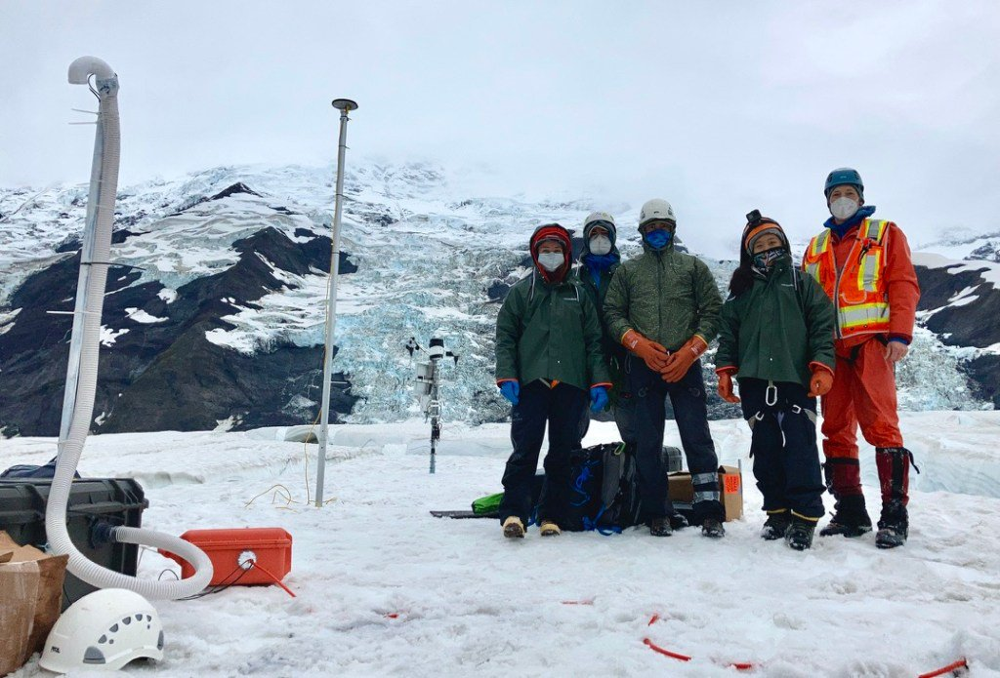

The joint U Idaho and BSU field team had a phenomenally successful first field season at Turner Glacier this fall. We installed 26 different geophysical instruments on and around Turner Glacier, including 17 seismometers, that we'll use to track changes in glacier basal conditions and water storage.
Click here for a run through of highlights as reported on Twitter.
